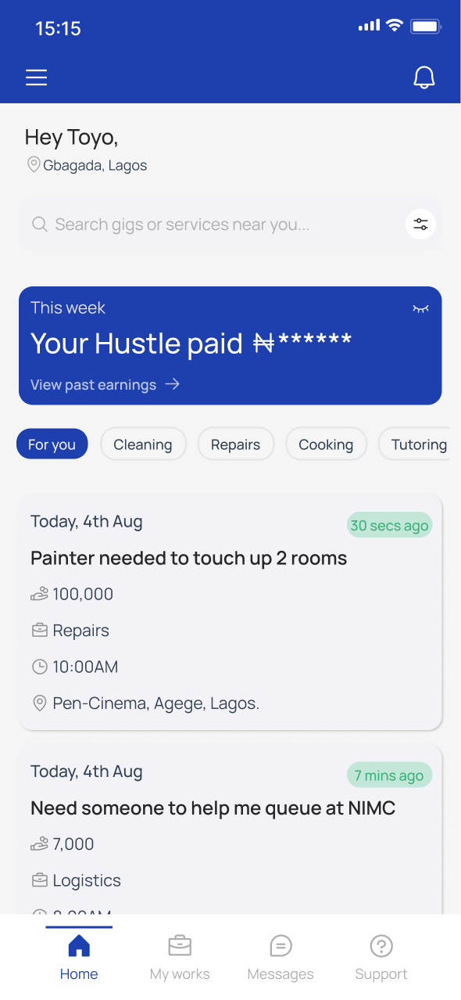
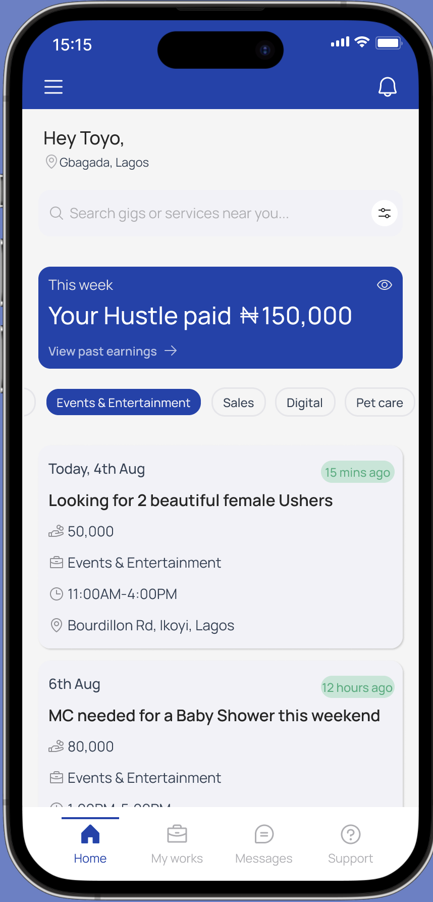
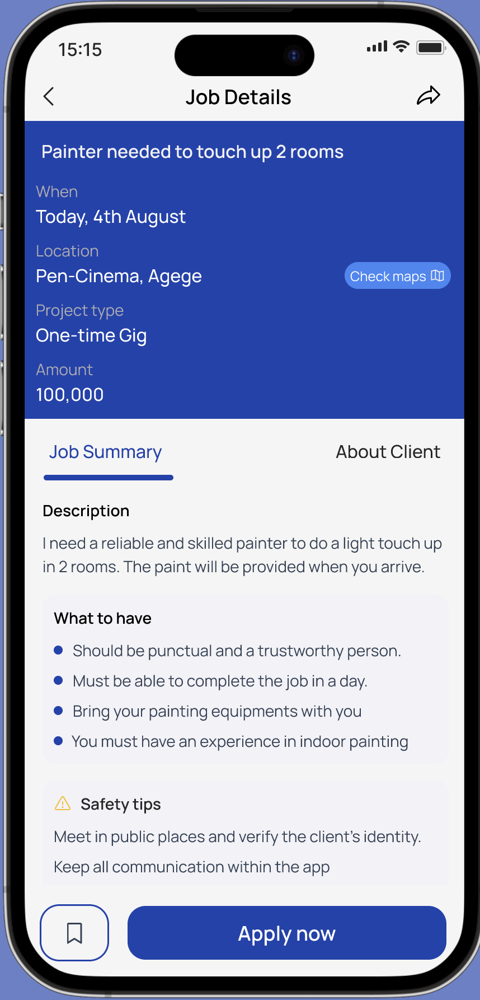
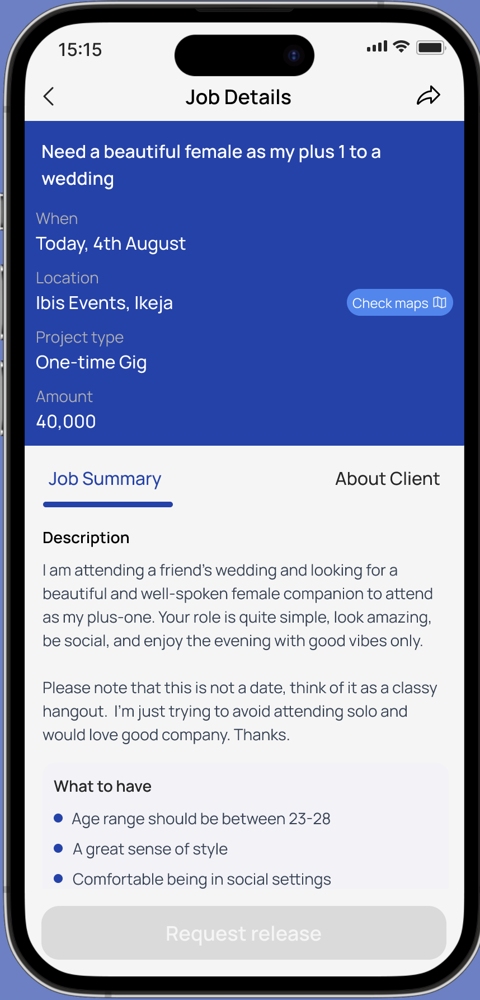
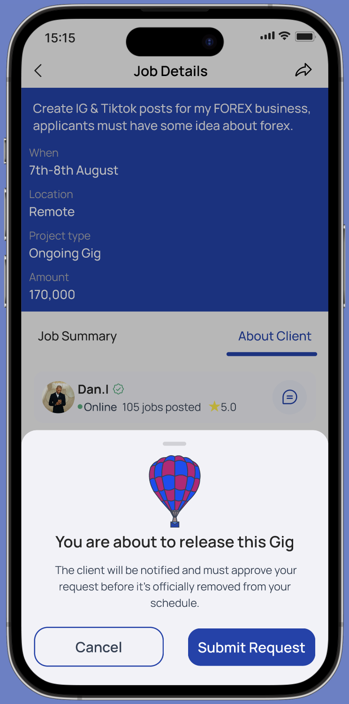
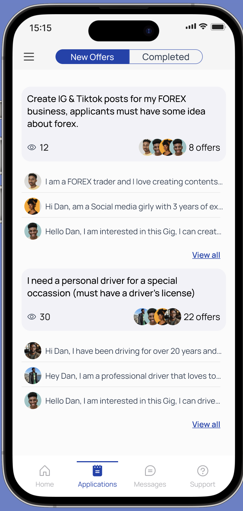
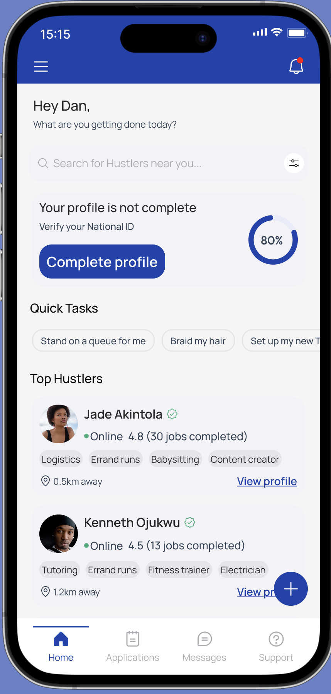
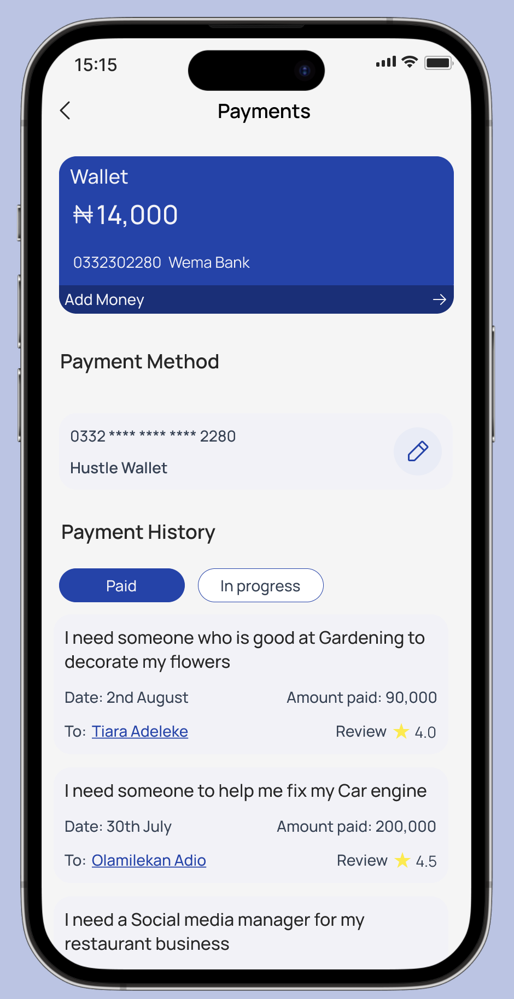

Works round the Globe
Works round the GlobeHustle Platform
Helping Freelancers land gigs and get paid without the chaos


Overview
Role- Collaboration
UI/UX Designer, UX Researcher
Timeline
July-Aug, 2025
Status
In Development
Deliverables
User flow, Wireframes, Ux Research, High Fidelity Prototypes, Visual Design
Summary
The economy is giving everyone a hard time. In Nigeria, where I'm from there are many hard-working people (especially students and low-income workers), who can't find a steady or flexible work. Despite having valuable skills, people are finding it difficult to connect with those in need of their services. This gap inspired me to come up "Hustle" which is also influenced by the hustling culture of Nigerians.
Hustle is made to cater to the particular requirements of people who want flexible work schedules. It would actively bridge the gap between Hustlers and Clients. Hustle is designed specifically for the Nigerian market, understanding local needs, payment preferences, and culture.

Highlights


Challenges
Problem Framing
Many people need different ways to earn some extra income without losing their main jobs. At the same time, people often struggle to find reliable help for quick tasks.
The question I kept asking myself was: "How can I help Young adults in Nigeria earn some money and Low income earners get extra income without affecting their regular jobs?"
Spotlighting Issues
-
1
Inaccessibility to local freelancing platforms
-
2
Lack of trust in foreign freelancing platforms
-
3
People struggle to find reliable help for short term tasks
Solutions
Hustle was created as a flexible side gig platform designed for the Nigerian audience that are looking to earn extra income through artisan work, short term jobs and weekend opportunities.
The platform creates an easy and reliable way for people to monetize their free time and also creates more jobs for people in the country.
-
1
Create a reliable platform for flexible side gigs and artisan jobs
-
2
Make earning extra income more accessible for low-income earners and young adults
-
3
Simplify the process of finding trusted local help
-
4
Connect people with a simpler and more relatable alternative to foreign freelancing platforms
Research Summary
We interviewed Nigerian freelancers and low-income earners to understand their struggles with finding flexible, trustworthy work. Their feedback revealed deep concerns around scams, upfront fees, and a lack of platforms built with the local context in mind. These insights guided us in shaping Hustle's features, from in-app messaging to transparent payments and identity verification.

-
88%
Users lack awareness and access to local freelancing platforms in Nigeria
-
84%
Users do not use freelance platforms that are not designed specifically for Nigerians
-
84%
Users prefer in-app messaging to communicate with clients/hustlers
-
72%
Users want a platform that is very flexible and offers a variety of job offers regardless of skill set
-
50%
Users think it is important to verify identity and job credibility before hiring and giving out jobs
-
78%
Users want a transparent payment method once a job is completed


User Personas

Summary
Fifehan is a driven university student struggling to make ends meet with irregular financial support from her parents. She's eager to find flexible work opportunities that won't interfere with her studies while building relevant experience for her future career. Despite her vocational skills, she's been burned by fraudulent job posts online and is now extremely cautious about online opportunities.
Frustrations
- Scam Anxiety: She has been a victim of a scam online where she provided services for a client and did not get paid.
- Limited Capital: She cannot afford to pay the upfront fees that many platforms demand.
- Lack of verification: She can't distinguish legitimate opportunities from fraudulent ones
Needs
- Trust Indicators: Clear verification systems, user reviews, and platform credibility.
- Low Barrier to Entry: Opportunities that don't require upfront payments or extensive experience.
- Flexible Scheduling: Work opportunities that can accommodate her academic calendar.
Summary
Josiah's salary barely covers his family's growing expenses, especially with inflation and his child's education costs. He's looking for legitimate side hustles he can do during the weekends to supplement his income. His previous experiences with untrustworthy job platforms have made him skeptical, but financial pressure keeps pushing him to search for additional income sources.
Frustrations
- Financial Pressure: Rising living costs and family responsibilities create urgent need for extra income
- Skill Underutilization: Can't find platforms that properly value his accounting and analytical skills
- Lack of Transparency: Unclear job descriptions and hidden terms that change after starting work
Needs
- Income Reliability: Consistent opportunities that provide predictable supplementary income
- Time Efficiency: High-value tasks that maximize earning potential within his limited available hours
- Transparent Operations: Clear communication about job requirements, timelines, and payment terms

Key Features



- Home Screen
I designed a simple Home screen for users to have easy access to without feeling overwhelmed by the interface. I took into consideration that many skilled workers like traders, electricians, hairstylists etc. who may not be tech savvy are new to a platform like this.
To ensure they have a great first time experience using the app, I decided to use a clear navigation bar, transparent earnings, Gig categorization and clear booking information making the interface simple and accessible to everyone. The “For you” tab also suggests jobs based on the skills of users.


- Job Details of Unbooked Gigs
To build trust, I ensured that Hustlers are well aware of the Client’s identity when they are about to apply for Gigs. They are well informed of the Safety tips to take before and during the process of the job.
There is 100% transparency about the job & client:
- Verified clients means they are real clients who are posting real gigs on the platform.
- Verified payment method means they have made payments for the Gig and just need a suitable person that can deliver.
- Reviews and Ratings help Hustlers to make a decision whether to work for the clients or not.
- Job Activity shows the number of applicants and if someone has been hired for it.



- Applying for Gigs
The application flow is designed to be fast and transparent. Hustlers can see how many people have applied and read offer messages, while Clients can browse all applicants and select the best fit for their gig — keeping the process fair and visible for everyone involved.


- Application & Payments
To protect both parties, Hustlers cannot release a booked Gig within 48 hours of accepting it — the Release button is intentionally disabled during this window to prevent last-minute cancellations. The Payments screen gives full visibility into wallet balance, saved payment method and a complete transaction history.


 10.png)

Visual Designs
.png)
Style Guide


Impact
After testing the prototype with few of my networks. I gained valuable insights into how the app affects user behavior and the significant impact it could have in the market.


Reflections
![Reflections — Toyo sitting on rocks by the sea. I learnt a lot within the span of 7 weeks. Challenges were faced while gathering research from skilled workers who are not savvy with technology, so I had to do some of the surveys in person. I was also faced with creative block for a short period which I later overcame after reading design books like Practical UI and Refactoring UI, and scrolling through Pinterest. This project has taught me how to prioritize solutions first before beautiful interface, and I was able to express myself vicariously through my designs.](hustle-project/assets in section one/Reflections.png)
I learnt a lot within the span of 7 weeks. Challenges were faced while I was gathering research from skilled workers who are not savvy with technology, so I had to do some of the surveys in person.
I was also faced with creative block for a short period which I later overcame after reading some Design Books like “Practical UI”, “Refactoring UI”, Scrolling through Pinterest. I was able to find my creative spark again.
This Project has taught me how to prioritize solutions first before beautiful interface and I was able to express myself vicariously through my Designs and I am happy to be able to share that part of myself with everyone 💙